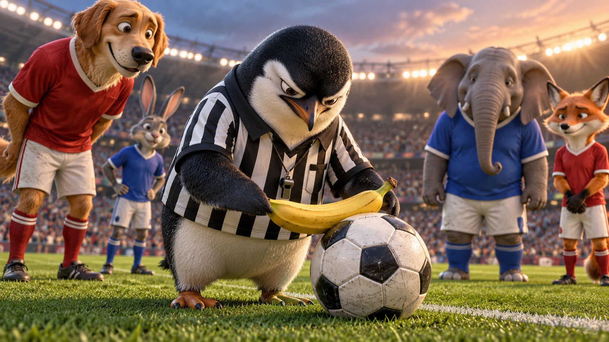

כיתה ח׳ · קריאה
A Place on
the Team
מקום בקבוצה
Band II · Core I · Group 01
כיתה ח׳
Before reading
חזרה על מילים מקבוצה 01
12 מילים וביטויים לקראת הסיפור. המילה ומשפט הדוגמה תחילה; המשמעות בשקף הבא.
Band II · Core I · Group 01 · 1/12
break
Let’s take a break.
Band II · Core I · Group 01 · 1/12
break
Let’s take a break.
הפסקה; חופשה
בואו נעשה הפסקה.
Band II · Core I · Group 01 · 2/12
join
Join us.
Band II · Core I · Group 01 · 2/12
join
Join us.
לחבר; להצטרף
הצטרפו אלינו.
Band II · Core I · Group 01 · 3/12
עבר
however
It was hard. However, I tried.
Band II · Core I · Group 01 · 3/12
עבר
however
It was hard. However, I tried.
עם זאת
זה היה קשה. עם זאת, ניסיתי.
Band II · Core I · Group 01 · 4/12
הווה
around
Is anyone around?
Band II · Core I · Group 01 · 4/12
הווה
around
Is anyone around?
בסביבה; מסביב
יש מישהו בסביבה?
Band II · Core I · Group 01 · 5/12
הווה
understanding
He has a good understanding of English.
Band II · Core I · Group 01 · 5/12
הווה
understanding
He has a good understanding of English.
הבנה; ידע
יש לו הבנה טובה באנגלית.
Band II · Core I · Group 01 · 6/12
take something seriously
Take this seriously.
Band II · Core I · Group 01 · 6/12
take something seriously
Take this seriously.
להתייחס למשהו ברצינות
התייחסו לזה ברצינות.
Band II · Core I · Group 01 · 7/12
עבר
by mistake
I called you by mistake.
Band II · Core I · Group 01 · 7/12
עבר
by mistake
I called you by mistake.
בטעות
התקשרתי אליכם בטעות.
Band II · Core I · Group 01 · 8/12
הווה
fine
I feel fine.
Band II · Core I · Group 01 · 8/12
הווה
fine
I feel fine.
בסדר; בריא
אני מרגיש טוב.
Band II · Core I · Group 01 · 9/12
go back
Let’s go back.
Band II · Core I · Group 01 · 9/12
go back
Let’s go back.
לחזור
בואו נחזור.
Band II · Core I · Group 01 · 10/12
הווה
explanation
I need an explanation.
Band II · Core I · Group 01 · 10/12
הווה
explanation
I need an explanation.
הסבר
אני צריך הסבר.

הפסקת תוכןBand II · Core I · Group 01 · 11/12
הווה
care
The baby needs care.
Band II · Core I · Group 01 · 11/12
הווה
care
The baby needs care.
טיפול; תשומת לב
התינוק זקוק לטיפול.
Band II · Core I · Group 01 · 12/12
הווה
be able to do something
I want to be able to swim.
Band II · Core I · Group 01 · 12/12
הווה
be able to do something
I want to be able to swim.
להיות מסוגל לעשות משהו
אני רוצה להיות מסוגל לשחות.
כיתה ח׳
Read the story
קריאה
קראו ועקבו אחר השינוי: מה גורם לאמיר להרגיש שהוא חלק מהקבוצה?
Reading · paragraph 1/14
עבר
At the morning break, Amir stood beside the football pitch, turning a small stone under his shoe. He wanted to join the game with his classmates.
Reading · paragraph 2/14
“Amir, you’re with us,” Noam called. Amir ran onto the pitch. However, the boys kept passing the ball around him. Twice he raised his hand. Twice the ball went somewhere else.
Reading · paragraph 3/14
Noam stopped beside him. “Why are you standing here?”
Reading · paragraph 4/14
“No one passes to me,” Amir said. “I can’t get better by watching.”
Reading · paragraph 5/14
עבר
Noam now had a better understanding of the problem. But his team was one goal behind. He took the game seriously and wanted to win.
Reading · paragraph 6/14
עבר
On the next attack, Noam passed to Amir. Amir kicked too quickly and sent the ball to the other team by mistake.
Reading · paragraph 7/14
“Why did you pass to him?” Dan shouted.
Reading · paragraph 8/14
Amir looked down. “It’s fine. I’ll go back to class.”
Reading · paragraph 9/14
“Stay,” Noam said. “Try a short pass. I’ll stand near you. We all make mistakes.”
Reading · paragraph 10/14
עבר
He gave Amir a quick explanation and showed him where to stand. When the ball came again, Amir moved with more care. He passed it a short distance to Noam.
Reading · paragraph 11/14
They did not score. Later, Amir missed another pass. This time, Dan called, “Try again!”
Reading · paragraph 12/14
עבר
The bell rang. Their team lost by one goal, but Amir walked back with the others.
Reading · paragraph 13/14
“You’ll be able to practice with us tomorrow,” Noam said.
Reading · paragraph 14/14
The next morning, Amir left the small stone beside the pitch and ran toward his classmates. “Which team am I on?”
Your turn
Read the worksheet. Answer questions 1–7. Use details from the story.
כיתה ח׳
Reading comprehension
שאלות הבנה
תשובות שונות מתקבלות כשהן מתאימות לפרטים שבסיפור.
Worksheet · Question 1
When and where does the story begin?
Worksheet · Question 1
When and where does the story begin?
תשובה אפשרית
It begins at the morning break, beside the school football pitch.
Worksheet · Question 2
Give one detail that shows Amir is on the team but is not really included.
Worksheet · Question 2
Give one detail that shows Amir is on the team but is not really included.
תשובה אפשרית
The boys keep passing the ball around Amir. He raises his hand twice, but the ball goes somewhere else.
Worksheet · Question 3
Why is it difficult for Noam to decide to pass to Amir?
Worksheet · Question 3
Why is it difficult for Noam to decide to pass to Amir?
תשובה אפשרית
His team is one goal behind. He takes the game seriously and wants to win.
Worksheet · Question 4
What happens when Noam first passes the ball to Amir?
Worksheet · Question 4
What happens when Noam first passes the ball to Amir?
תשובה אפשרית
Amir kicks too quickly and sends the ball to the other team by mistake.
Worksheet · Question 5
Name two things Noam does to help Amir stay in the game.
Worksheet · Question 5
Name two things Noam does to help Amir stay in the game.
תשובה אפשרית
He asks Amir to stay, suggests a short pass, stands near him, and explains where to stand. Any two are acceptable.
Worksheet · Question 6
How does Dan’s reaction to Amir’s mistakes change?
Worksheet · Question 6
How does Dan’s reaction to Amir’s mistakes change?
תשובה אפשרית
At first, Dan shouts at Noam for passing to Amir. Later, when Amir misses another pass, Dan encourages him: “Try again!”
Worksheet · Question 7
What does Amir’s question at the end suggest about how he feels? Use a story detail.
Worksheet · Question 7
What does Amir’s question at the end suggest about how he feels? Use a story detail.
תשובה אפשרית
He seems more confident that he belongs. He runs toward his classmates and asks which team he is on, rather than waiting beside the pitch.
Visual riddle
Which English idiom is hidden in this scene?
Visual riddle
Which English idiom is hidden in this scene?

At sixes and sevens
Confused or disorganized. · מבולבלים או בחוסר סדר
Idiom in context
עבר
“We were at sixes and sevens before the game. Nobody knew which team to join.”
Group 01 · use the word
Complete: Amir sent the ball to the other team ________.
Group 01 · use the word
Complete: Amir sent the ball to the other team ________.
תשובה
by mistake
Group 01 · use the word
Complete: Noam gave Amir a short ________ of where to stand.
Group 01 · use the word
Complete: Noam gave Amir a short ________ of where to stand.
תשובה
explanation
כיתה ח׳
Write & reflect
כתיבה וסיכום
ענו על שאלה 8 בדף העבודה. השתמשו בפרט מהסיפור ובשלוש מילים מהחזרה.
Worksheet · Question 8
Write 3–4 sentences: How can classmates include a player who is still learning? Use one story detail and three focus words.
Worksheet · Question 8
Write 3–4 sentences: How can classmates include a player who is still learning? Use one story detail and three focus words.
תשובה אפשרית
Example: A classmate can join our game even if he is still learning. He may pass to the wrong team by mistake. We can give a short explanation and try again, as Noam does. Passing to him again helps him take part.
Exit ticket
Name one action that helps a classmate take part—even after a mistake.
כיתה ח׳
Lesson materials
ניווט: ארבעת החצים, גלגלת העכבר או החלקה. לחזרה לחומרי הכיתה: סמל הבית.